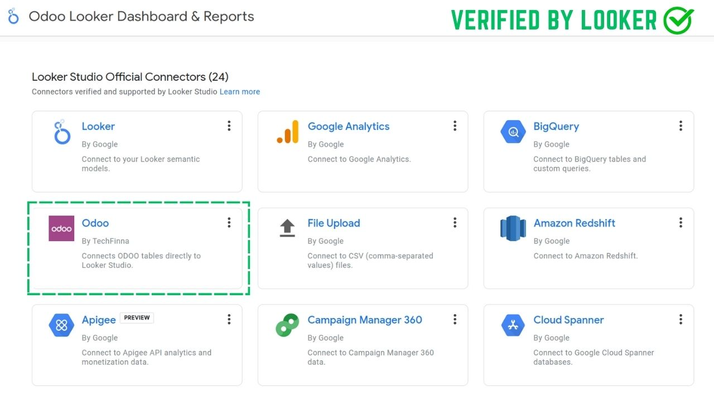
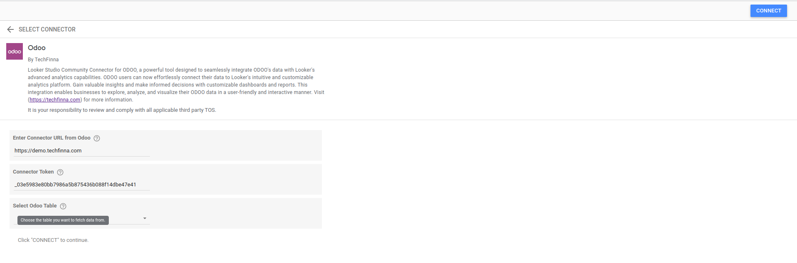
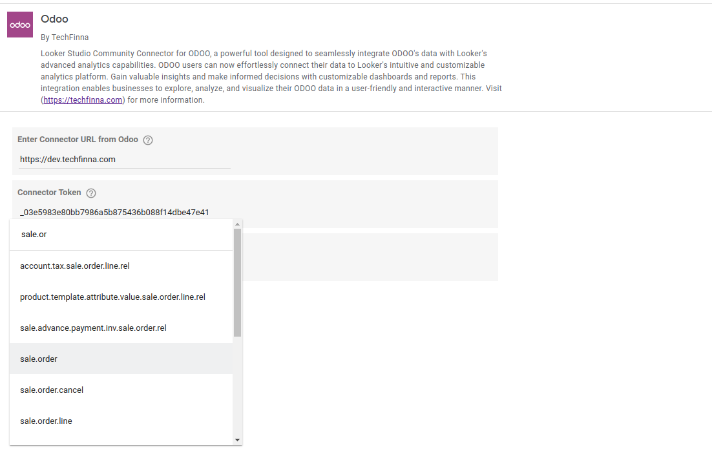
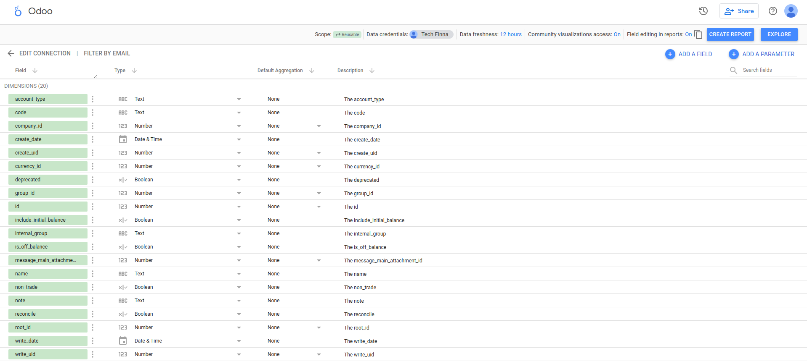
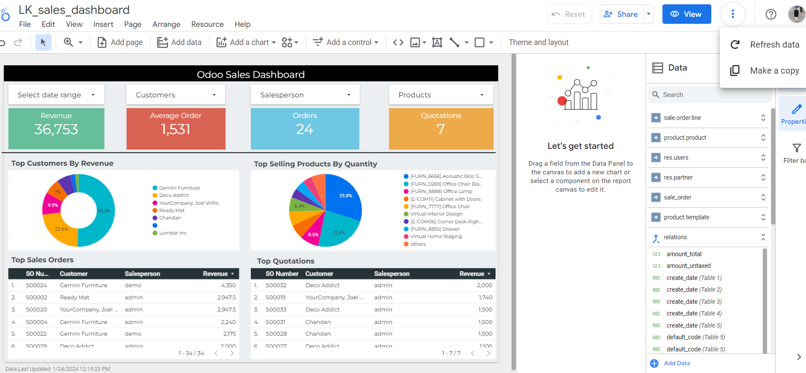

Unlock the power of data visualization by effortlessly integrating your Odoo data with Looker Studio using our intuitive connector. Streamline your reporting and analytics process, saving time and resources.




➢ Custom SQL Query Execution
➢ View Selective Data
Checkout Add-On moduleClick here






Need assistance in building insightful reports or dashboards with Odoo data in Looker Studio? Our experienced team is here to help.
Feel free to reach out to us at info@techfinna.com.

➢ Intuitive Graphical Chart View
➢ Table Relationships
➢ Execute Custom SQL Queries
➢ Extract Excel Sheet
Checkout Odoo data model Click here